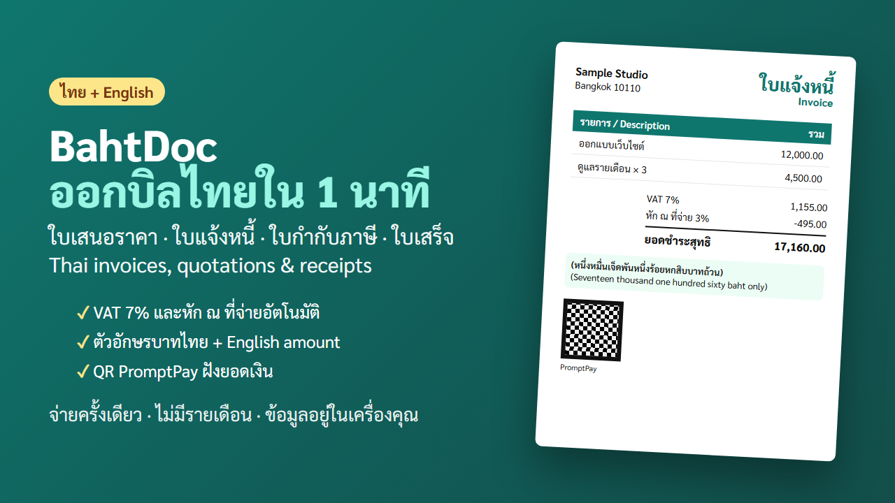

ทำใบเสนอราคา ใบแจ้งหนี้ ใบเสร็จ
ภาษาไทยใน 1 นาที
คิด VAT 7% และหัก ณ ที่จ่ายให้อัตโนมัติ เขียนจำนวนเงินเป็นตัวหนังสือบาทไทย มี QR PromptPay ให้ลูกค้าสแกนจ่าย ออกเอกสารไทย อังกฤษ หรือสองภาษาได้

ทำไมฟรีแลนซ์และร้านเล็กใช้ BahtDoc
ไม่ต้องสมัคร ไม่มีรายเดือน
เปิดในเบราว์เซอร์แล้วใช้ได้เลย ข้อมูลอยู่ในเครื่องคุณ ไม่ถูกส่งขึ้นเซิร์ฟเวอร์คิดภาษีให้ครบ
VAT 7% แบบแยกหรือรวมในราคา และหัก ณ ที่จ่าย 1% 2% 3% 5% พร้อมยอดชำระสุทธิตัวหนังสือบาทไทย
เช่น 17,160 บาท เขียนเป็น "หนึ่งหมื่นเจ็ดพันหนึ่งร้อยหกสิบบาทถ้วน" ให้อัตโนมัติQR PromptPay ฝังยอดเงิน
ลูกค้าสแกนแล้วยอดขึ้นตรงตามบิล ไม่ต้องพิมพ์จำนวนเงินเองไทย / English / สองภาษา
ออกเอกสารให้ลูกค้าต่างชาติ หรือบริษัทที่ต้องการบิลสองภาษาได้พิมพ์เป็น PDF
กดพิมพ์แล้วบันทึกเป็น PDF ขนาด A4 ส่งลูกค้าได้ทันทีรุ่นฟรี vs รุ่นเต็ม
| ความสามารถ | รุ่นฟรี (ออนไลน์) | รุ่นเต็ม 299 บาท |
|---|---|---|
| ใบเสนอราคา / ใบแจ้งหนี้ | ✓ | ✓ |
| ใบกำกับภาษี / ใบเสร็จรับเงิน | – | ✓ |
| VAT 7% | ✓ | ✓ |
| หัก ณ ที่จ่าย | – | ✓ |
| ตัวหนังสือบาทไทย + อังกฤษ | ✓ | ✓ |
| QR PromptPay ฝังยอดเงิน | – | ✓ |
| บันทึกเอกสาร / รันเลขที่อัตโนมัติ | เลขที่อัตโนมัติ | ✓ |
| ลายน้ำท้ายเอกสาร | มี | ไม่มี |
| ใช้แบบออฟไลน์ | ติดตั้งเป็นแอปบนมือถือได้ ใช้ออฟไลน์หลังเปิดครั้งแรก | ✓ ไฟล์เดียว เก็บไว้ในเครื่อง |
ราคาเปิดตัว 199 บาท (ปกติ 299) สำหรับ 50 คนแรก ถึง 7 พ.ย. 2569
ใช้ได้ทั้งบนมือถือและใน Excel
ติดตั้งบนมือถือ
เปิดรุ่นฟรีแล้วเพิ่มลงหน้าจอหลัก ใช้ได้แม้ไม่มีเน็ต ไม่ต้องโหลดจากร้านแอป ดูวิธีติดตั้งเทมเพลต Excel ฟรี
ใบเสนอราคา ใบแจ้งหนี้ ใบกำกับภาษี ใบเสร็จรับเงิน มีสูตร VAT หัก ณ ที่จ่าย และตัวหนังสือบาท ดาวน์โหลดชุดเครื่องมือภาษีฟรีแลนซ์
บันทึกรายได้ ติดตามลูกค้าที่ยังไม่ส่งใบ 50 ทวิ และประมาณภาษีปลายปี ใน Excel ไฟล์เดียว 199 บาท ดูรายละเอียดเครื่องมือและบทความฟรี
- ดาวน์โหลดเทมเพลต Excel ฟรี ใบเสนอราคา ใบแจ้งหนี้ ใบกำกับภาษี ใบเสร็จรับเงิน
- ติดตั้ง BahtDoc บนมือถือ Android และ iPhone
- แปลงตัวเลขเป็นตัวหนังสือบาทไทย (บาทถ้วน) ออนไลน์
- คำนวณ VAT 7% และหัก ณ ที่จ่าย (ถอด VAT / บวก VAT)
- ใบแจ้งหนี้ ต้องมีอะไรบ้าง
- ใบเสร็จรับเงิน ต้องมีอะไรบ้าง
- หัก ณ ที่จ่าย 3% คิดยังไง สำหรับฟรีแลนซ์ พร้อมตัวอย่าง
- ใบเสนอราคา ต้องมีอะไรบ้าง พร้อมตัวอย่างฟรี
- ใบกำกับภาษี กับ ใบเสร็จรับเงิน ต่างกันอย่างไร
- How to invoice Thai clients (English)